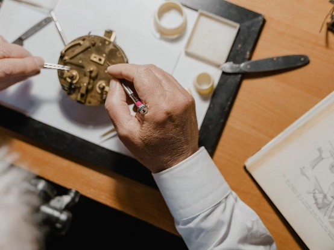

L'élégance de la précision, à la française.
S&C Watches est née de la passion de deux jeunes amoureux des montres. Après un long moment d'hésitation, ils ont décidé de créer leur propre marque. Leurs garde-temps sont dessinés et assemblés à Annecy-le-Vieux.

Trois piliers, aucune concession
La noblesse des métaux
Acier 316L de grade chirurgical, cadrans guillochés ou texturés, verres traités anti-reflets. Nous ne retenons que les matériaux qui traversent les décennies.
Le juste prix du luxe
De 145 € à 240 €, sans intermédiaire ni marge de distribution. La désintermédiation directe atelier–client rend enfin l'excellence accessible.
La fierté du façonné en France
Dessinées et assemblées à Annecy-le-Vieux, entre lac et montagnes. Chaque pièce porte cette signature.
Le début d'une aventure
- 2025
Deux jeunes passionnés de montres décident de créer leur propre marque, pour laisser parler leur créativité et leur ambition grandissante.
- 2026
Lancement d'une grande aventure : la première collection S&C Watches.